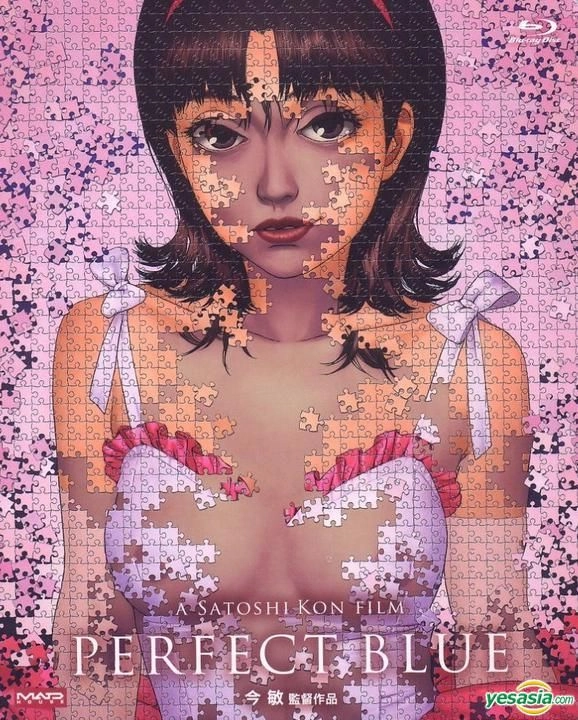

パーフェクトブルー
1997年
今敏監督のデビュー作。アイドル歌手の霧越未麻が俳優に転向する過程で、現実と幻想の境界が曖昧になっていく心理サスペンス作品。 人間の心理の深層を描いた革新的なアニメーションとして、世界中の映画ファンに衝撃を与えました。
作品情報
- 監督: 今敏
- 制作: マッドハウス
- 上映時間: 81分
- ジャンル: 心理サスペンス
今敏監督が手がけた傑作群をご紹介します
1997年
今敏監督のデビュー作。アイドル歌手の霧越未麻が俳優に転向する過程で、現実と幻想の境界が曖昧になっていく心理サスペンス作品。 人間の心理の深層を描いた革新的なアニメーションとして、世界中の映画ファンに衝撃を与えました。

2001年
伝説の女優・藤原千代子の人生を追うドキュメンタリー形式の作品。 戦前から現代まで、様々な時代の映画作品に出演した千代子の人生を通じて、 愛と記憶の本質を描いた感動的な物語です。
2003年
ホームレスの3人が赤ちゃんを拾ったことから始まる、現代の東京を舞台にした人間ドラマ。 クリスマスイブの奇跡を描いた心温まる物語で、今敏監督の人間愛に満ちた作品として知られています。
2006年
夢と現実の境界を自由に往来する「パプリカ」という存在を通じて、 人間の無意識の深層に迫るサイコ・サスペンス作品。 今敏監督の遺作として、その革新的な映像表現と深いテーマ性で高い評価を受けています。
1988年 - 宮崎駿監督作品のレイアウト担当
1993年 - 押井守監督作品のレイアウト担当
1993年 - アニメーション監督
2004年 - テレビアニメシリーズ監督